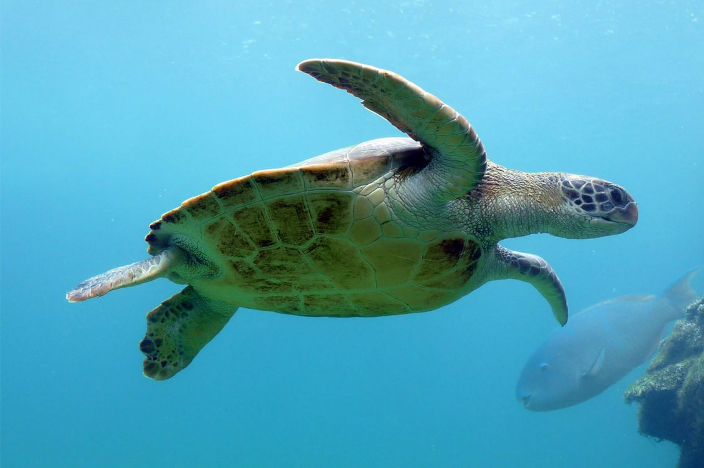

La carapace de la tortue
Griffe
ongle de la tortue.
Patte postérieure
membre arrière de la tortue.
Patte antérieure
membre avant de la tortue.
Les pattes sont très musclées car elles doivent soulever leur propre poids. Elles sont composées à leurs extrémités de 5 doigts reliés généralement entre eux et munis de griffes. Les pattes avant sont nettement plus fortes que les postérieures.
